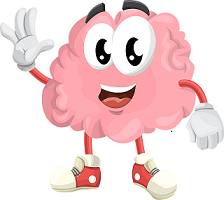

Witaj!
Jesteśmy studentkami Politechniki Gdańskiej. Prowadzimy badania dotyczące wiedzy społeczeństwa na temat udaru mózgu. Ankieta wypełniona przez Ciebie bardzo nam pomoże. Jej wypełnienie zajmie Ci najwyżej 3 minuty.
Ankieta
Po zebraniu oraz przetworzeniu danych, umieścimy wyniki naszych badań. Zachęcamy do zapoznania się z nimi! :)
Wyniki